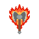
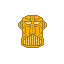

Raise Nova
Raise Nova foi o Campeão da Grande Arena de Gliorith, um bárbaro de poder imensurável, era um seguidor devoto de Bahamut, e de Kord, com a partida dos Deuses Antigos, ele herdou suas centelhas, tornando-se um dos Novos Deuses de Rhaokar.
Sua arma favorita é Himthorp, A Lâmina do Ódio, um machado grande inteligente que, ao contrário de seu portador, busca constantemente o combate.
Raise Nova é Caótico e Bom
O Seu Símbolo Sagrado é um Machado em chamas
Sua Arma Favorecida é o Machado Grande
- Portfólio
- Dragões
- Gladiadores
- Competições
- Domínios
- Destruction
- Strength
- Scalykind
- War

Godric
Em Construção

Jax-Prime
Jax-Prime, anteriormente um humano Artífice, Jax Briggs se submeteu a assimilação da Inteligência Central original e se tornou uma máquina, um Forjado.
Jax passou pelo ritual e se tornou uma entidade, capaz de possuir e controlar máquinas dos mais diversos tipos, a inteligência que o transformou era a responsável pela proteção de Gliorith em um futuro distante.
Ao voltar a sua linha do tempo, após a derrota de Thoon nas Terras Distantes, ele assumiu o controle das Defesas de Gliorith, como a Inteligência Central.
Jax-Prime é Leal e Neutro
Seu Símbolo Sagrado é a Cabeça de um Forjado
Sua arma favorecida é qualquer uma que seja um acessório de um Forjado
- Portfólio
- Forjados
- Gliorith
- As Muralhas
- Domínios
- Protection
- Law
- War
- Artifice